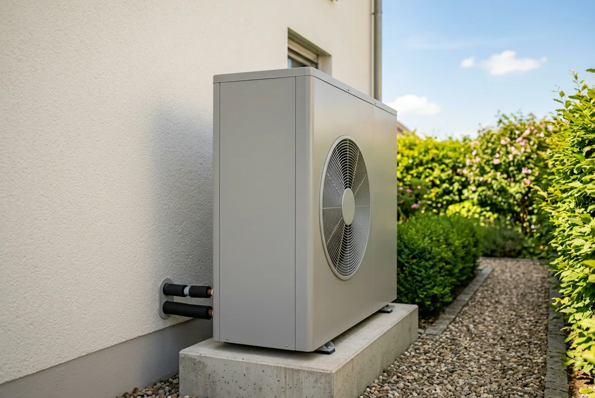
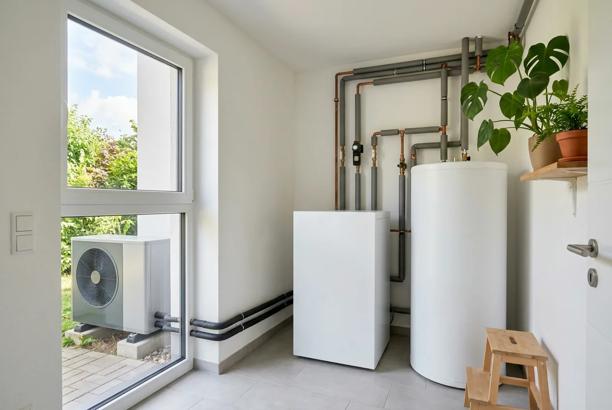
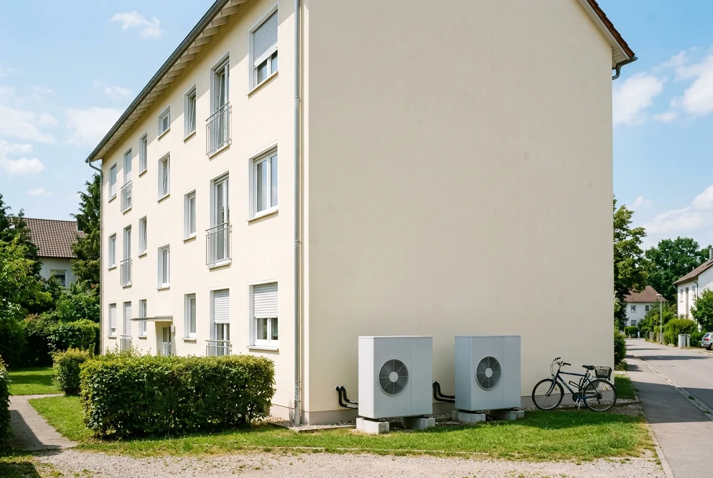

Inhaltsverzeichnis
- Was die Reform geändert hat
- Fördersätze, Boni und Deckel
- Rechenbeispiel: sechs Fälle
- Kostenspanne mit Quellen
- Höchstkosten und Eigenanteil
- Selbstnutzer, Vermieter, WEG
- Degression: was Warten kostet
- Was 2027 für Wärmepumpen kommt
- Antragsweg und Reihenfolge
- Angebot vor der Unterschrift prüfen
- Fazit
- Kurz und direkt beantwortet
- Häufige Fragen
Das Wichtigste in Kürze
- Maximal 22.400 Euro: 80 Prozent von 28.000 Euro förderfähigen Höchstkosten. Mehr ist für die erste Wohneinheit nicht möglich.
- Drei Bausteine: 30 Prozent Grundförderung, 16 Prozentpunkte Klimageschwindigkeitsbonus, 10 bis 40 Prozentpunkte Einkommensbonus. Effizienzbonus und Emissionsminderungszuschlag entfallen.
- Deckel nach Einkommen: 80 Prozent nur bis 30.000 Euro zu versteuerndem Haushaltsjahreseinkommen (40.000 Euro mit Kind), sonst 70 Prozent.
- 28.000 Euro sind die Grenze: Wer 40.000 Euro zahlt, bekommt Förderung nur auf 28.000 Euro. Der Rest bleibt beim Eigentümer.
- Nur für Selbstnutzer: Vermieter erhalten weder Klimageschwindigkeits- noch Einkommensbonus, für sie bleiben 30 Prozent.
- Timing: Ab 1. Februar 2027 sinken Bonus und Höchstkosten; maßgeblich ist die Antragstellung, nicht der Einbau.
Was sich mit der Reform vom 21. Juli 2026 geändert hat
Für alle Anträge ab dem 21. Juli 2026 gilt die Richtlinie BEG EM vom 17. Juli 2026. Die Heizungsförderung ist nicht abgeschafft, aber neu sortiert, und einige Bausteine sind gestrichen, mit denen viele Ratgeberseiten weiterhin rechnen.
- Klimageschwindigkeitsbonus: von 20 auf 16 Prozentpunkte gesenkt, mit festem Fahrplan zur weiteren Absenkung.
- Förderfähige Höchstkosten: von 30.000 auf 28.000 Euro für die erste Wohneinheit, ab Februar 2027 halbjährlich weiter sinkend.
- Effizienzbonus von 5 Prozent: ersatzlos entfallen.
- Emissionsminderungszuschlag von 2.500 Euro: als pauschaler Zuschlag entfallen; emissionsmindernde Arbeiten laufen jetzt als Heizungsoptimierung über das BAFA.
- Einkommensbonus: gestaffelt in drei Stufen: 40, 30 und 10 Prozentpunkte.
Rechnerisch folgt daraus etwas Überraschendes: Der maximale Zuschuss ist trotz gekürzter Boni gestiegen, von 21.000 Euro (70 Prozent von 30.000 Euro) auf 22.400 Euro (80 Prozent von 28.000 Euro). Kleine Einkommen stehen also besser da als vorher, hohe schlechter; das Überblickspapier des Bundeswirtschaftsministeriums vom 9. Juli 2026 heißt entsprechend „Sozialer, effizienter und fokussierter“.
Wer den Antrag vor dem 21. Juli 2026 gestellt hat, wird noch nach den alten Konditionen behandelt; bereits erteilte Zusagen behalten ihre Gültigkeit. Zuständig ist für den Heizungstausch seit 2024 die KfW mit dem Zuschussprogramm 458, für Gebäudehülle, Anlagentechnik und Heizungsoptimierung das BAFA. Alle weiteren Änderungen ordnet unser Überblick zur BEG-Reform 2026 ein.
Wie sich der Zuschuss zusammensetzt, und wo der Deckel greift
Der Zuschuss besteht aus drei Bausteinen, die als Prozentsätze auf die förderfähigen Kosten wirken, nicht auf die Rechnungssumme:
- Grundförderung 30 Prozent, für jede in der Richtlinie geführte Heiztechnik, also auch für jede Wärmepumpe, und auch für Vermieter.
- Klimageschwindigkeitsbonus 16 Prozentpunkte, nur für selbstnutzende Eigentümerinnen und Eigentümer und nur für die selbstgenutzte Wohneinheit.
- Einkommensbonus 10 bis 40 Prozentpunkte, ebenfalls nur für Selbstnutzer, gestaffelt nach dem zu versteuernden Haushaltsjahreseinkommen (zvE) aus dem Steuerbescheid, nicht nach dem Brutto.
In der Spitze ergibt das rechnerisch 86 Prozent. Ausgezahlt wird das nicht. Der Fördersatz-Deckel hängt allein vom zvE ab: Bis 30.000 Euro sind 80 Prozent möglich, darüber 70 Prozent. Lebt mindestens ein minderjähriges, kindergeldberechtigtes Kind im Haushalt, wird das anzusetzende Einkommen einmalig um 10.000 Euro reduziert, die 80-Prozent-Grenze verschiebt sich damit auf 40.000 Euro. Dieser Familienzuschlag gilt nur ein einziges Mal, unabhängig von der Zahl der Kinder, nicht je Kind. Die Bonusstufen schließen einander aus.
| Zu versteuerndes Haushaltsjahreseinkommen | Einkommensbonus ohne Kind unter 18 | Einkommensbonus mit mindestens einem kindergeldberechtigten Kind unter 18 |
|---|---|---|
| bis 30.000 Euro | 40 Prozentpunkte | 40 Prozentpunkte |
| 30.001 bis 40.000 Euro | 30 Prozentpunkte | 40 Prozentpunkte |
| 40.001 bis 50.000 Euro | 10 Prozentpunkte | 30 Prozentpunkte |
| 50.001 bis 60.000 Euro | kein Bonus | 10 Prozentpunkte |
| ab 60.001 Euro | kein Bonus | kein Bonus |
Den Klimageschwindigkeitsbonus gibt es nicht für jeden Tausch. Er setzt eine funktionstüchtige Altanlage voraus: bei Öl-, Kohle-, Gas-Etagen- und Nachtstromspeicherheizungen unabhängig vom Alter, bei Gas- und Biomasseheizungen erst nach mindestens 20 Jahren seit Inbetriebnahme (Stichtag: Antragstellung). Die Altanlage muss fachgerecht demontiert und entsorgt werden, danach darf nicht mehr fossil geheizt werden. Details: Klimageschwindigkeitsbonus 2026 und seine Degression.

Das Rechenbeispiel: sechs Haushalte, dieselbe Wärmepumpe
Bei identischer Anlage und förderfähigen Kosten von 28.000 Euro reicht der Zuschuss je nach Haushalt von 8.400 bis 22.400 Euro. Prozentsätze sagen wenig, solange sie nicht in Euro übersetzt sind. Deshalb ein Szenario, in dem sich nur die Haushaltssituation ändert.
Das Szenario: selbstgenutztes Einfamilienhaus. Eine 22 Jahre alte, funktionstüchtige Gasheizung wird gegen eine Luft-Wasser-Wärmepumpe getauscht und fachgerecht entsorgt. Förderfähige Kosten: 28.000 Euro, exakt der Höchstbetrag für die erste Wohneinheit. Antragstellung zwischen dem 21. Juli 2026 und dem 31. Januar 2027, Anspruch auf den Klimageschwindigkeitsbonus besteht.
| Fall | zvE des Haushalts | Grundförderung | Klimageschwindigkeitsbonus | Einkommensbonus | Summe rechnerisch | Anzuwendender Deckel | Zuschuss | Eigenanteil |
|---|---|---|---|---|---|---|---|---|
| A | über 60.000 Euro | 30 % | 16 % | 0 % | 46 % | 70 % (nicht erreicht) | 12.880 Euro | 15.120 Euro |
| B | 40.001 bis 50.000 Euro | 30 % | 16 % | 10 % | 56 % | 70 % (nicht erreicht) | 15.680 Euro | 12.320 Euro |
| C | 30.001 bis 40.000 Euro | 30 % | 16 % | 30 % | 76 % | 70 % (greift) | 19.600 Euro | 8.400 Euro |
| D | bis 30.000 Euro | 30 % | 16 % | 40 % | 86 % | 80 % (greift) | 22.400 Euro | 5.600 Euro |
| E | 38.000 Euro, ein Kind unter 18, anzusetzen: 28.000 Euro | 30 % | 16 % | 40 % | 86 % | 80 % (greift) | 22.400 Euro | 5.600 Euro |
| F | über 60.000 Euro, Gasheizung erst 12 Jahre alt (kein Bonus) | 30 % | 0 % | 0 % | 30 % | 70 % (nicht erreicht) | 8.400 Euro | 19.600 Euro |
Beispielrechnung, Herkunft der Zahlen: Prozentsätze, Deckel und Höchstkosten stammen aus der Richtlinie BEG EM vom 17. Juli 2026 und dem KfW-Merkblatt 458. Die Euro-Beträge sind daraus abgeleitete Rechenwerte; amtlich veröffentlichte Beispielwerte gibt es dazu nicht. Sie ersetzen keine Zusage im Einzelfall.
- Der Deckel ist keine theoretische Größe. In Fall D werden sechs Prozentpunkte gekappt, 1.680 Euro, die nicht ausgezahlt werden.
- Der größte Einzelhebel ist das Einkommen. Zwischen Fall A und Fall D liegen 9.520 Euro, bei identischem Haus, identischer Technik und identischer Rechnung.
- Ein Kind kann 2.800 Euro wert sein. Fall E hat dasselbe Einkommen wie Fall C, springt aber durch ein einziges Kind auf die höhere Bonusstufe und vom 70- auf den 80-Prozent-Deckel. Ein zweites Kind ändert nichts mehr.
- Die 20-Jahre-Regel entscheidet über 4.480 Euro. Fall F unterscheidet sich von Fall A nur durch das Alter der Gasheizung.
Welches Steuerjahr die KfW für das zvE heranzieht, klärt der Beitrag zu Einkommensbonus und Familienzuschlag.
Was eine Luft-Wasser-Wärmepumpe 2026 tatsächlich kostet
Eine amtliche Preisstatistik für Wärmepumpen gibt es nicht; die reale Rechnung liegt häufig über den 28.000 Euro des Rechenbeispiels, die bewusst gewählt sind und exakt dem Förderhöchstbetrag entsprechen. Deshalb hier die beiden belastbarsten Erhebungen mit Datum:
- Die Verbraucherzentrale Rheinland-Pfalz hat in einer Pressemitteilung vom 2. Juli 2026 160 eingereichte Angebote für Luft-Wasser-Wärmepumpen ausgewertet: Gesamtkosten zwischen 21.099 und 54.168 Euro, im Durchschnitt rund 36.400 Euro. Die Verbraucherzentrale betont dabei große Preisunterschiede und teils versteckte Kostenpositionen zwischen den Anbietern.
- co2online nennt für ein durchschnittliches Einfamilienhaus eine weiter gefasste Spanne von 12.000 bis 47.000 Euro (Stand 20. Mai 2026): ausdrücklich je nach Wärmequelle, also Außenluft, Erdreich oder Grundwasser. Auf anderen Seiten desselben Anbieters kursieren deutlich engere Werte: ein Hinweis darauf, wie stark solche Spannen von der Erhebungsmethode abhängen.
Beide messen Unterschiedliches: konkrete Angebote für eine Bauart gegenüber einem Rahmen über alle Wärmequellen. Einen einzelnen „Durchschnittspreis“ nennen wir deshalb nicht; die Stiftung Warentest spricht in ihrem frei zugänglichen Text ebenfalls nur von einem fünfstelligen Betrag. Hersteller- und Anbieterangaben verwenden wir nicht als Referenz.
Praktisch heißt das: Prüfen Sie jedes Angebot darauf, ob wirklich alles enthalten ist: Speicher, Hydraulik, Elektroanschluss, Fundament, Entsorgung der Altanlage, Inbetriebnahme und Einregulierung. Genau dort entstehen die Preisunterschiede, die die Verbraucherzentrale beschreibt. Wie Sie die Gesamtrechnung aufstellen, zeigt Gesamtkosten einer Wärmepumpe im Altbau realistisch berechnen.
Von der Rechnung zum Eigenanteil: warum 28.000 Euro die entscheidende Zahl ist
Der Fördersatz wirkt auf die förderfähigen Höchstkosten, und die liegen beim Heizungstausch bei 28.000 Euro für die erste Wohneinheit. Jeder Euro darüber wird zu 100 Prozent selbst getragen. Hier machen die meisten Ratgeber einen Fehler, der Leser bares Geld kostet: Sie multiplizieren den Fördersatz stattdessen mit der Rechnungssumme.
Ein Beispiel: Die Wärmepumpe kostet laut Rechnung 40.000 Euro. Ein Haushalt mit einem zvE unter 30.000 Euro erreicht den 80-Prozent-Deckel, und bekommt trotzdem nicht 32.000 Euro, sondern 22.400 Euro, weil die 80 Prozent auf 28.000 Euro gerechnet werden. Der Eigenanteil beträgt 17.600 Euro, die effektive Förderquote 56 statt 80 Prozent.
Beispielrechnung für den bestmöglichen Fall (Fall D, 80-Prozent-Deckel):
| Rechnungsbetrag | Förderfähige Kosten | Zuschuss | Eigenanteil | Effektive Förderquote |
|---|---|---|---|---|
| 28.000 Euro | 28.000 Euro | 22.400 Euro | 5.600 Euro | 80 % |
| 36.400 Euro (Durchschnitt der 160 ausgewerteten Angebote) | 28.000 Euro | 22.400 Euro | 14.000 Euro | rund 62 % |
| 45.000 Euro | 28.000 Euro | 22.400 Euro | 22.600 Euro | rund 50 % |
Für Fall A (über 60.000 Euro zvE, 46 Prozent) bleibt der Zuschuss über alle drei Zeilen konstant bei 12.880 Euro. Der Eigenanteil steigt von 15.120 über 23.520 auf 32.120 Euro, die effektive Quote fällt von 46 über 35 auf 29 Prozent.
Die Konsequenz: Oberhalb von 28.000 Euro verhandeln Sie zu 100 Prozent gegen Ihr eigenes Geld. Ein um 6.000 Euro teureres Angebot kostet Sie volle 6.000 Euro, nicht 1.200.
Angebot da? Wir prüfen es auf Förderfähigkeit, vor der Unterschrift.
Wir rechnen Ihren Fall mit den Konditionen seit dem 21. Juli 2026 durch, prüfen Gerät, Leistungspositionen und Vertragsform und sagen Ihnen, welcher Zuschuss realistisch ist.
Kostenlose Erstberatung sichernWer bekommt was: Selbstnutzer, Vermieter, Eigentümergemeinschaft
„Jeder bekommt bis zu 70 oder 80 Prozent“ ist die häufigste falsche Aussage zum Thema: Zwei der drei Bausteine sind strikt an die Selbstnutzung gebunden.
Selbstnutzende Eigentümer kombinieren alle drei, allerdings nur für die selbstgenutzte Wohneinheit. Für sie gilt die Tabelle oben unverändert.
Vermieter erhalten weder den Klimageschwindigkeitsbonus noch den Einkommensbonus, beide setzen laut Richtlinie ausdrücklich die Selbstnutzung voraus. Für ein vermietetes Einfamilienhaus bleiben damit 30 Prozent Grundförderung, bei 28.000 Euro förderfähigen Kosten also 8.400 Euro (Beispielrechnung). Angaben wie „Vermieter erhalten maximal 35 Prozent“ finden sich weiterhin auf Ratgeberseiten; nach der Richtlinie gilt für Vermieter allein die Grundförderung.
Mehrfamilienhaus und Wohnungseigentümergemeinschaft: Die Höchstkosten summieren sich über die Wohneinheiten: 28.000 Euro für die erste, je 15.000 Euro für die zweite bis sechste, je 8.000 Euro ab der siebten. Sechs Wohneinheiten ergeben so 103.000 Euro förderfähige Kosten (Beispielrechnung). Die Grundförderung gilt für das gesamte Vorhaben, die beiden Boni nur anteilig für die selbstgenutzte Wohneinheit, dafür ist ein Zusatzantrag nötig, spätestens sechs Monate nach der Zusage des Basisantrags. Wird nur eine Etagenheizung ersetzt, verteilt sich der Gebäude-Höchstbetrag gleichmäßig auf alle Wohneinheiten.

Wann sich der Antrag lohnt: der Degressionsfahrplan
Bonus und Höchstkosten sinken ab Februar 2027 im Halbjahrestakt. Maßgeblich ist immer der Zeitpunkt der Antragstellung, nicht der Einbau, wer im Januar 2027 beantragt und im Sommer 2028 baut, rechnet mit den Januar-Konditionen.
| Antragstellung im Zeitraum | Klimageschwindigkeitsbonus | Förderfähige Höchstkosten (1. Wohneinheit) |
|---|---|---|
| 21.07.2026 bis 31.01.2027 | 16 % | 28.000 Euro |
| 01.02.2027 bis 31.07.2027 | 12 % | 27.250 Euro |
| 01.08.2027 bis 31.01.2028 | 8 % | 26.500 Euro |
| 01.02.2028 bis 31.07.2028 | 4 % | 25.750 Euro |
| 01.08.2028 bis 31.01.2029 | entfällt | 25.000 Euro |
| 01.02.2029 bis 31.07.2029 | entfällt | 24.250 Euro |
| 01.08.2029 bis 31.01.2030 | entfällt | 23.500 Euro |
| 01.02.2030 bis 31.07.2030 | entfällt | 22.750 Euro |
| ab 01.08.2030 | entfällt | 22.000 Euro |
Was ein halbes Jahr Warten kostet, fällt anders aus als vermutet, Beispielrechnung auf Basis der Fälle oben:
- Fall A (46 Prozent, kein Einkommensbonus): ab dem 1. Februar 2027 nur noch 42 Prozent auf 27.250 Euro. Aus 12.880 Euro werden 11.445 Euro, rund 1.435 Euro weniger.
- Fall D (80-Prozent-Deckel): Hier bremst der Deckel den Effekt, weil die Bonussumme ohnehin gekappt wird. Aus 22.400 Euro werden 21.800 Euro, rund 600 Euro weniger.
Die Degression trifft also Haushalte ohne Einkommensbonus deutlich härter. Wer den Deckel erreicht, verliert nur die Absenkung der Höchstkosten.
Was ab dem 1. Quartal 2027 speziell auf Wärmepumpen zukommt
Ab dem 1. Quartal 2027 ändert sich die Systematik gleich dreifach, diesen Teil der Richtlinie übersehen fast alle Ratgeber, obwohl er für Wärmepumpen der einschneidendste ist:
- Die Grundförderung für elektrisch angetriebene Wärmepumpen sinkt von 30 auf 15 Prozent, für die übrigen Heiztechniken bleibt es bei 30 Prozent.
- Neu kommt ein Wertschöpfungs-Bonus von 15 Prozentpunkten für Wärmepumpen, die „ihren Ursprung in der Union“ haben. Für ein EU-Gerät bleibt es damit rechnerisch bei 30 Prozent, für ein Gerät ohne EU-Ursprung halbiert sich die Grundförderung.
- Junge Bestandsanlagen werden gesperrt. Wird ein Gebäude bereits mit einer der geförderten Heizungsarten versorgt, die seit dem 1. Januar 2008 in Betrieb ging oder seitdem an ein Wärmenetz angeschlossen ist, wird der Einbau einer weiteren Anlage nicht mehr gefördert, wer 2015 eine Wärmepumpe eingebaut hat, bekommt für deren Austausch also nichts. Ausgenommen bleibt der Ersatz fossiler Erzeuger in bivalenten Systemen.
Zur Einordnung: Die Richtlinie nennt hier lediglich „ab Quartal 1 2027“ und damit kein taggenaues Datum; ob der 1. Januar oder der 1. Februar gemeint ist, lässt sich aus dem Text nicht ableiten. Wer die Regelung sicher nutzen oder ihr sicher zuvorkommen will, sollte den Antrag bis Ende 2026 stellen. Auch wie der „Ursprung in der Union“ nachzuweisen ist, steht noch nicht fest: Die Richtlinie verweist auf das Infoblatt zu den förderfähigen Maßnahmen, das zum Redaktionsschluss noch nicht angepasst ist. Planen Sie deshalb keinen Antrag auf diesen Bonus hin.
Ein Stichtag steht dagegen fest: Ab dem 1. Januar 2028 werden nur noch Wärmepumpen mit natürlichen Kältemitteln gefördert. Anerkannt sind unter anderem Propan (R290), Isobutan (R600a), Ammoniak (R717) und Kohlendioxid (R744).

Der Antragsweg in Kürze, und der Fehler, der die Förderung kostet
Die Reihenfolge entscheidet über die Förderung, und sie ist unlogisch:
- Angebot einholen und die Bestätigung zum Antrag (BzA) erstellen lassen. Das darf hier ein Energieeffizienz-Experte oder der Fachbetrieb selbst.
- Liefer- oder Leistungsvertrag mit aufschiebender (oder auflösender) Bedingung abschließen: Er wird erst wirksam, wenn die KfW zusagt, und nennt ein voraussichtliches Umsetzungsdatum.
- Antrag im KfW-Kundenportal „Meine KfW“ stellen, mit der 15-stelligen BzA-ID und dem Vertrag.
- Erst nach der Zusage bauen; dafür bleiben 36 Monate. Danach die Bestätigung nach Durchführung (BnD) erstellen lassen und innerhalb von sechs Monaten nach der letzten Rechnung die Auszahlung beantragen.
Der Fehler, der alles kostet: Ein unbedingter Vertrag oder der tatsächliche Baubeginn vor der Antragstellung gilt als Vorhabenbeginn und schließt die Förderung aus. Ein „fangen Sie schon mal an“ per Handschlag reicht, um 22.400 Euro zu verlieren. Alle Formulare und Fristen im Detail: KfW-458-Heizungsförderung.
Woran Angebote scheitern: Technik, Dimensionierung, Förderfähigkeit
Ein Zuschuss nützt wenig, wenn das Gerät die technischen Mindestanforderungen verfehlt oder die Anlage falsch dimensioniert ist. Das prüfen wir an jedem Angebot:
- Steht das Gerät auf der BAFA-Wärmeerzeugerliste? Nur dort geführte Wärmepumpen sind förderfähig; der Modellname muss exakt passen.
- Ist die Jahresarbeitszahl auf mindestens 3,0 ausgelegt? Nachweis nach VDI 4650 Blatt 1. Sie hängt an den Vorlauftemperaturen, und damit an den vorhandenen Heizflächen.
- Erfüllt das Außengerät die Schallanforderung? Bei Luft-Wasser-Wärmepumpen müssen die Geräuschemissionen mindestens 10 dB unter den Grenzwerten der EU-Ökodesign-Verordnung 813/2013 liegen.
- Ist die Anlage netzdienlich steuerbar? Eine digitale Schnittstelle nach § 14a EnWG ist Pflicht.
- Sind Demontage und Entsorgung der Altheizung enthalten? Ohne sie entfällt der Klimageschwindigkeitsbonus, im Rechenbeispiel oben 4.480 Euro.
Der größte Hebel liegt aber vor der Geräteauswahl. Wir erstellen eine raumweise Heizlastberechnung, statt die Leistung aus dem Gasverbrauch zu schätzen. Eine überdimensionierte Wärmepumpe taktet, verschleißt schneller und ist teurer, was die Förderung wegen der 28.000-Euro-Grenze nicht auffängt. Zu klein ausgelegt springt im Winter der Heizstab an. Die Berechnung zeigt zudem, welche Heizkörper wirklich getauscht werden müssen.
Anschließend prüfen wir das Handwerkerangebot auf Förderfähigkeit, vor der Vertragsunterschrift: Technik, Vertragsform und Vollständigkeit der Leistungspositionen. Liegen Ihnen mehrere Angebote vor, achten Sie auf vergleichbaren Leistungs- und Lieferumfang, sonst vergleichen Sie Preise für unterschiedliche Anlagen. Ob Ihr Gebäude geeignet ist, klärt der Selbstcheck zur Wärmepumpen-Eignung im Altbau.
Fazit: Was jetzt zu tun ist
Die Förderung ist nach der Reform vor allem anders verteilt: Bis 30.000 Euro zvE liegt der maximale Zuschuss mit 22.400 Euro höher als zuvor. Das ist die Gewinnerseite. Ein Haushalt über 60.000 Euro zvE käme nach den alten Konditionen rechnerisch auf 15.000 Euro (50 Prozent von 30.000 Euro), heute sind es 12.880 Euro; ohne Anspruch auf den Klimageschwindigkeitsbonus bleiben 30 Prozent. Wer gut verdient, verliert also, und verliert mit jedem Degressionsschritt weiter.
- Antragszeitpunkt: Bis zum 31. Januar 2027 gelten 16 Prozentpunkte Bonus und 28.000 Euro Höchstkosten; ab dem 1. Quartal 2027 kommt die Halbierung der Wärmepumpen-Grundförderung hinzu, für die kein taggenaues Datum feststeht. Wer ohnehin plant, sollte bis Ende 2026 beantragen. Das ist der Zeitraum mit gesicherten Konditionen.
- Angebotshöhe: Oberhalb von 28.000 Euro zahlen Sie jeden Euro selbst.
- Reihenfolge: bedingter Vertrag, dann Antrag, dann Bau.
Welcher Fall auf Sie zutrifft und ob Ihr Haus die Voraussetzungen erfüllt, rechnen wir vorab durch, bevor Sie unterschreiben. Ob sich der Umstieg lohnt, ordnet Wärmepumpe im Altbau: wann sie sich lohnt, und wann nicht ein.
Stand der Angaben (25. Juli 2026)
Stand: 25. Juli 2026, alle Angaben ohne Gewähr. Maßgeblich sind die Richtlinie BEG EM vom 17. Juli 2026 (in Kraft seit 21. Juli 2026) und das KfW-Merkblatt 458 in der jeweils gültigen Fassung. Die Prozentsätze und Höchstbeträge stammen aus diesen Dokumenten; die genannten Euro-Beträge sind daraus abgeleitete Beispielrechnungen und keine Förderzusage im Einzelfall.
Kurz und direkt beantwortet
Die folgenden Fragen beantworten wir bewusst in wenigen Sätzen. Jede Antwort steht für sich und ist ohne den übrigen Text verständlich.
Was zählt bei einer Wärmepumpe zu den förderfähigen Kosten?
Maßgeblich ist nicht die Rechnungssumme, sondern der förderfähige Höchstbetrag von 28.000 Euro für die erste Wohneinheit nach der Richtlinie BEG EM vom 17. Juli 2026. Welche Positionen im Einzelnen anerkannt werden, regelt laut Richtlinie das Infoblatt zu den förderfähigen Maßnahmen und Leistungen; dieses wird derzeit überarbeitet. Achten Sie deshalb darauf, dass das Angebot Speicher, Hydraulik, Elektroanschluss, Fundament, Entsorgung der Altanlage und Inbetriebnahme getrennt ausweist.
Wie viel Eigenanteil bleibt bei einer Wärmepumpe für 40.000 Euro?
Bei einem Rechnungsbetrag von 40.000 Euro bleiben selbst im günstigsten Fall 17.600 Euro Eigenanteil. Der Grund: Der Fördersatz wirkt auf die förderfähigen Höchstkosten von 28.000 Euro, nicht auf die Rechnung. Wer den 80-Prozent-Deckel erreicht, erhält deshalb 22.400 Euro statt 32.000 Euro. Die effektive Förderquote sinkt auf 56 Prozent. Jeder Euro oberhalb von 28.000 Euro wird vollständig selbst getragen. Es handelt sich um eine Beispielrechnung.
Welche technischen Anforderungen muss eine geförderte Wärmepumpe erfüllen?
Nach den Technischen Mindestanforderungen der Richtlinie BEG EM vom 17. Juli 2026 muss die Anlage auf eine Jahresarbeitszahl von mindestens 3,0 ausgelegt sein, nachgewiesen nach VDI 4650 Blatt 1, eine digitale Schnittstelle für die netzorientierte Steuerung nach Paragraf 14a EnWG besitzen und in der BAFA-Wärmeerzeugerliste geführt sein. Bei Luft-Wasser-Wärmepumpen müssen die Geräuschemissionen des Außengeräts mindestens 10 dB unter den Grenzwerten der EU-Ökodesign-Verordnung 813/2013 liegen.
Werden auch Erdwärmepumpen und Wasser-Wärmepumpen gefördert?
Ja, mit derselben Grundförderung von 30 Prozent wie jede andere in der Richtlinie BEG EM vom 17. Juli 2026 geführte Heiztechnik. Der frühere Aufschlag von 5 Prozent für diese Wärmequellen ist mit der Reform vom 21. Juli 2026 entfallen. Die Technischen Mindestanforderungen verlangen bei Erdwärme und Wasser eine jahreszeitbedingte Raumheizungs-Energieeffizienz von mindestens 180 Prozent bei 35 Grad Vorlauftemperatur; für Erdsonden muss die Bohrfirma nach DVGW W120-2 zertifiziert und versichert sein.
Ab wann werden nur noch Wärmepumpen mit natürlichen Kältemitteln gefördert?
Ab dem 1. Januar 2028 werden nach den Technischen Mindestanforderungen der Richtlinie BEG EM vom 17. Juli 2026 nur noch Wärmepumpen mit natürlichen Kältemitteln gefördert. Anerkannt sind unter anderem Propan (R290), Isobutan (R600a), Propen (R1270), Ammoniak (R717), Wasser (R718) und Kohlendioxid (R744). Für frühere Anträge gilt die Einschränkung nicht. Wer erst 2028 beantragen will, sollte das Kältemittel deshalb schon bei der Geräteauswahl prüfen lassen.
Was ist der neue Wertschöpfungs-Bonus für Wärmepumpen?
Der Wertschöpfungs-Bonus ist ein Aufschlag von 15 Prozentpunkten für elektrisch angetriebene Wärmepumpen, die nach der Richtlinie BEG EM vom 17. Juli 2026 ihren Ursprung in der Union haben. Er tritt neben die gleichzeitige Absenkung der Grundförderung für Wärmepumpen von 30 auf 15 Prozent. Wie der Ursprung nachzuweisen ist, regelt laut Richtlinie das Infoblatt zu den förderfähigen Maßnahmen; dieses ist noch nicht angepasst. Die Richtlinie nennt nur „ab Quartal 1 2027“ und damit kein taggenaues Datum.
Bekomme ich Förderung, wenn im Haus schon eine relativ neue Heizung steckt?
Derzeit ja, ab dem 1. Quartal 2027 aber nicht mehr. Die Richtlinie BEG EM vom 17. Juli 2026 schließt ab diesem Zeitpunkt den Einbau eines neuen Wärmeerzeugers von der Förderung aus, wenn das Gebäude bereits mit einer seit dem 1. Januar 2008 in Betrieb genommenen Anlage versorgt oder an ein Wärmenetz angeschlossen ist. Ausgenommen bleibt der Ersatz fossiler Erzeuger in bivalenten Systemen. Ein taggenaues Startdatum nennt die Richtlinie nicht.
Was kostet eine Luft-Wasser-Wärmepumpe 2026?
Einen amtlichen Durchschnittspreis gibt es nicht. Die Verbraucherzentrale Rheinland-Pfalz hat in einer Pressemitteilung vom 2. Juli 2026 160 eingereichte Angebote für Luft-Wasser-Wärmepumpen ausgewertet: Gesamtkosten zwischen 21.099 und 54.168 Euro, im Durchschnitt rund 36.400 Euro. co2online nennt für ein durchschnittliches Einfamilienhaus eine weiter gefasste Spanne von 12.000 bis 47.000 Euro, Stand 20. Mai 2026, je nach Wärmequelle. Die Spannen zeigen vor allem, wie stark Leistungsumfang und Erhebungsmethode das Ergebnis bestimmen.
Häufige Fragen
Wie hoch ist die Wärmepumpen-Förderung 2026 maximal?
Für die erste Wohneinheit sind maximal 22.400 Euro möglich, 80 Prozent auf förderfähige Höchstkosten von 28.000 Euro. Die 80 Prozent erreichen nur selbstnutzende Eigentümer mit einem zu versteuernden Haushaltsjahreseinkommen bis 30.000 Euro, beziehungsweise bis 40.000 Euro, wenn mindestens ein kindergeldberechtigtes Kind unter 18 im Haushalt lebt. Für alle anderen liegt der Deckel bei 70 Prozent. Angaben wie „maximal 21.000 Euro“ stammen aus der Zeit vor dem 21. Juli 2026.
Bekomme ich als Vermieter auch die volle Förderung für eine Wärmepumpe?
Nein. Vermieter erhalten die Grundförderung von 30 Prozent, aber weder den Klimageschwindigkeitsbonus noch den Einkommensbonus, beide setzen laut Richtlinie ausdrücklich die Selbstnutzung voraus. Für ein vermietetes Einfamilienhaus bedeutet das bei 28.000 Euro förderfähigen Kosten einen Zuschuss von 8.400 Euro. In einem teils selbst genutzten, teils vermieteten Mehrfamilienhaus gibt es die Boni anteilig für die selbstgenutzte Wohneinheit; dafür ist ein Zusatzantrag nötig.
Muss ich den Förderantrag stellen, bevor ich den Auftrag erteile?
Nicht ganz. Die Reihenfolge wird oft falsch beschrieben. Vor dem Antrag muss bereits ein Vertrag geschlossen sein, allerdings ausschließlich mit aufschiebender oder auflösender Bedingung: Er wird erst wirksam, wenn die KfW zusagt, und wird beim Antrag hochgeladen. Ein unbedingter Vertragsabschluss oder der Baubeginn vor der Antragstellung gilt dagegen als Vorhabenbeginn und schließt die Förderung aus. Gebaut werden darf erst nach der Zusage; danach bleiben 36 Monate Zeit.
Wie lange dauert es, bis der Zuschuss ausgezahlt wird?
Eine feste Bearbeitungsdauer nennt die KfW in ihren Veröffentlichungen nicht. Eine belastbare Wochenangabe lässt sich deshalb nicht seriös machen. Fest steht der Ablauf: Ausgezahlt wird erst nach Abschluss der Arbeiten, wenn die Bestätigung nach Durchführung vorliegt und der Auszahlungsantrag mit allen Rechnungen gestellt ist. Für die Nachweiseinreichung haben Sie sechs Monate ab der letzten Rechnung Zeit. Planen Sie die Finanzierung so, dass Sie die Handwerkerrechnung zunächst selbst begleichen können.
Lohnt sich eine Wärmepumpe 2026 noch, wenn die Förderung ab 2027 weiter sinkt?
Die Konditionen bis zum 31. Januar 2027 sind die besten des gesamten Fahrplans: 16 Prozentpunkte Klimageschwindigkeitsbonus und 28.000 Euro förderfähige Höchstkosten. Danach sinken beide halbjährlich, der Bonus entfällt ab August 2028 vollständig. Zusätzlich soll ab dem 1. Quartal 2027 die Grundförderung für Wärmepumpen von 30 auf 15 Prozent fallen, ausgeglichen durch einen Wertschöpfungs-Bonus von 15 Prozentpunkten für Geräte mit EU-Ursprung. Ein taggenaues Datum nennt die Richtlinie dafür nicht. Wer ohnehin tauschen will, beantragt am sichersten bis Ende 2026.